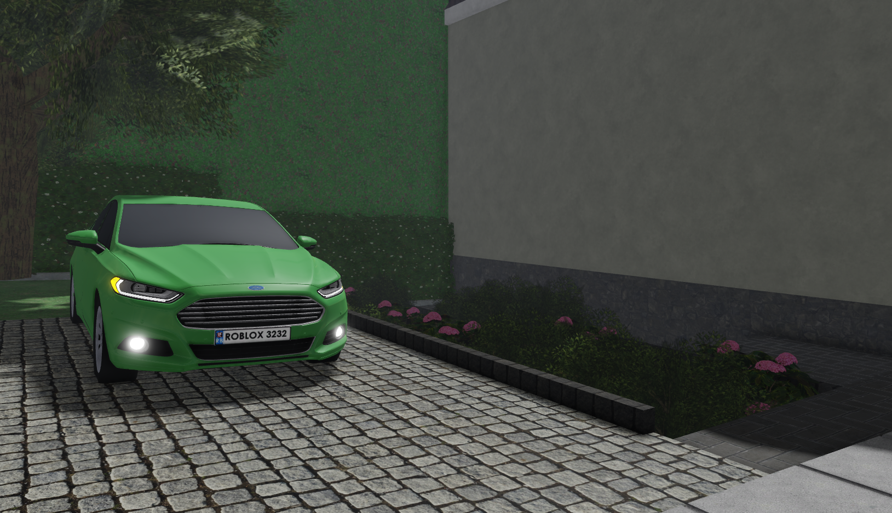
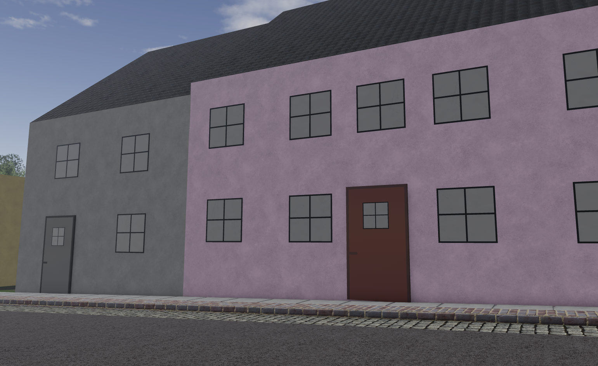
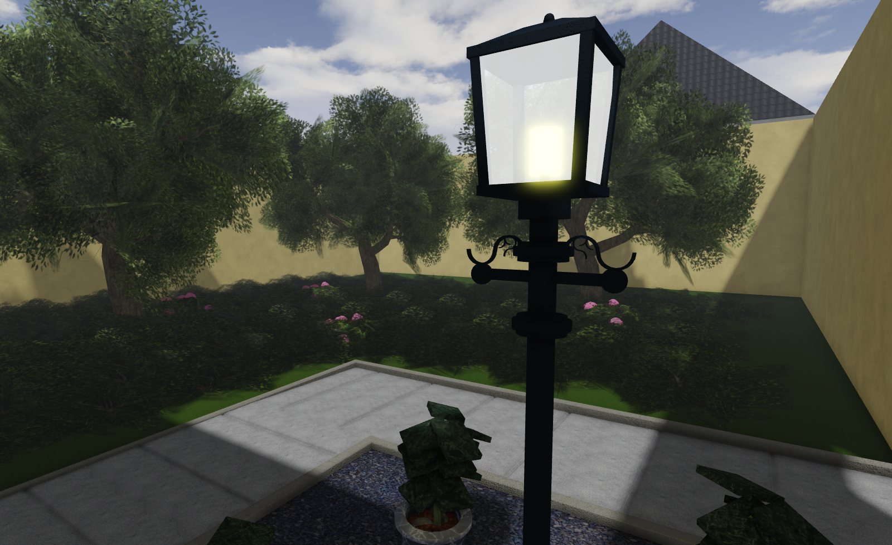

RBK_DEV-STUDIOS · NEUESTES PROJEKT
Bus Simulator Sachsen
Ein neues Bus-Simulationsprojekt mit Fokus auf sächsische Umgebung, Fahrbetrieb und einer detaillierten Spielwelt.
AKTUELLER STANDIn EntwicklungErste Einblicke verfügbar
OEDERAN UND UMLAND
Die erste Map.
Die Karte „Oederan und Umland“ bildet den ersten großen Schauplatz des Projekts. Auf dieser Seite zeigen wir bereits drei fertige Sneak Peeks aus der aktuellen Entwicklung.



ROADMAP
Entwicklung verfolgen.
Alle größeren Schritte, geplanten Funktionen und Updates findest du in unserer Trello-Roadmap.